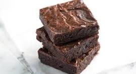

Bursting Brownies

Sure, here is a recipe for keto-friendly brownies that is sure to satisfy your sweet tooth without kicking you out of ketosis:
Ingredients:
- 1 cup almond flour
- 1/4 cup unsweetened cocoa powder
- 1/2 teaspoon baking powder
- 1/4 teaspoon salt
- 1/3 cup melted coconut oil or butter
- 3 tablespoons water
- 2 eggs
- 2/3 cup granulated erythritol or monk fruit sweetener
- 1 teaspoon vanilla extract
- 1/2 cup chopped nuts (optional)
- 1/2 cup sugar-free chocolate chips (optional)
Instructions:
- Preheat oven to 350 degrees F (175 degrees C) and line an 8x8 inch baking pan with parchment paper.
- In a medium bowl, whisk together almond flour, cocoa powder, baking powder, and salt.
- In a separate bowl, whisk together melted coconut oil or butter, water, eggs, erythritol or monk fruit sweetener, and vanilla extract.
- Pour the wet ingredients into the dry ingredients and stir until just combined.
- Fold in chopped nuts and chocolate chips, if using.
- Pour batter into prepared pan and bake for 20-25 minutes, or until a toothpick inserted into the center comes out with moist crumbs.
- Let cool completely in the pan before cutting into squares.
Tips:
- For a fudgier brownie, bake for less time. For a cake-like brownie, bake for a few minutes longer.
- You can use other nut flours in place of almond flour, such as hazelnut flour or coconut flour. Just be sure to adjust the other ingredients accordingly.
- If you don't have erythritol or monk fruit sweetener, you can use stevia, but be careful because it is much sweeter than sugar.
- You can also add other keto-friendly ingredients to the brownies, such as chopped dark chocolate, peanut butter, or espresso powder.
I hope you enjoy these delicious keto-friendly brownies!